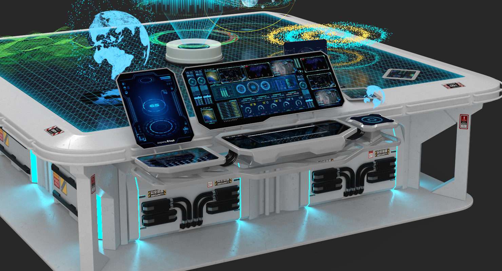

Dispositivo tecnológico que permite crear y manipular imágenes holográficas mediante el uso de un guante equipado con sensores y una cámara. El usuario usa el guante para interactuar con un software de creación de hologramas que genera imágenes tridimensionales en tiempo real, que luego son proyectadas en el espacio físico a través de un dispositivo de proyección holográfica.
Lentes Holográficos
Dispositivos que utilizan tecnología avanzada para crear imágenes tridimensionales en el aire. En lugar de mostrar imágenes en una pantalla plana, estas gafas utilizan una técnica llamada proyección de luz para crear hologramas que se ven como si estuvieran flotando en el espacio.
Mesa de trabajo Holográfica

Dispositivo tecnológico que utiliza una combinación de hardware y software para crear imágenes tridimensionales que parecen flotar sobre la superficie de la mesa. En lugar de tener una pantalla plana como una computadora o un televisor convencional, una mesa de hologramas utiliza una superficie de proyección especial que permite que la luz se refracte en una imagen en tres dimensiones.